【メモリリソース監視】
はじめに
本記事では、物理メモリ・仮想メモリ・キャッシュの使用率を棒グラフで可視化し、使用率に応じて「通常」「warn」「alert」「critical」の状態を色分け表示する仕組みを紹介します。
また、閾値と通知メールの設定方法についても詳しく解説します。
色分け表示の特徴
- 文字色や棒グラフの色はパーセンテージで制御されます。
- 色の変化は、以下のように状態の深刻度を視覚的に伝えます。
| 状態 | 閾値 | 背景色 | 意味 |
|---|---|---|---|
| 通常 | ～warn未満 | 緑系 | 安定稼働中 |
| warn | warn以上～alert未満 | 黄系 | 中程度の負荷（注意） |
| alert | alert以上～critical未満 | 橙系 | 高負荷（警戒） |
| critical | critical以上 | 赤系 | 過負荷（即対応推奨） |
全体容量の表示
全体容量は以下のように「使用中／全容量」の形式で表示され、更新は一定間隔で自動反映されます。
また、文字色が以下のように変化し、状態の深刻度を視覚的に伝えます。
以下はメール内容の例です。
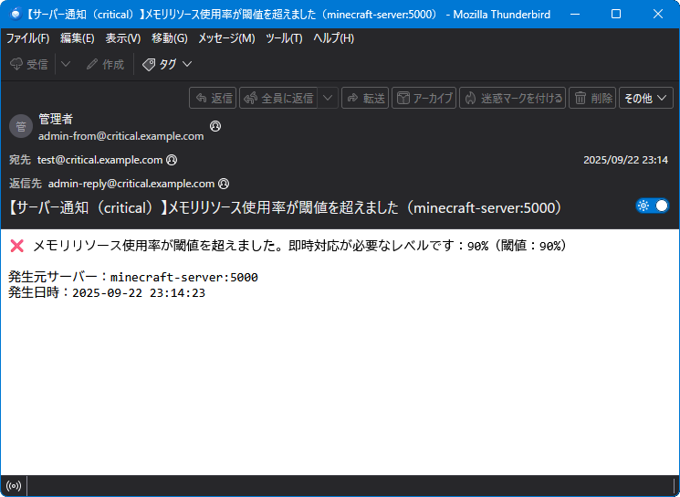
メールの件名や本文は以下のファイルで変更できます。
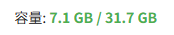
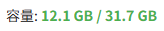
⇒
通常（安定稼働中）
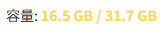
⇒
warn（注意レベル）
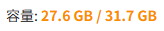
⇒
alert（警戒レベル）
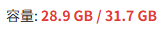
⇒
critical（即対応推奨レベル）通知メールについて
- 通知メールは 全体使用率が各閾値に到達した瞬間（上昇時）にのみ 発火します。
- 具体的には、使用率が
warn → alert → criticalと上昇するタイミングで、それぞれ1回ずつ通知されます。 - 使用率が下降して閾値を下回っても、通知は発生しません（通知の過剰発生を防ぐため）。
- 通知内容には、発生時刻・稼働率・対象サーバーなどが含まれます。
以下はメール内容の例です。
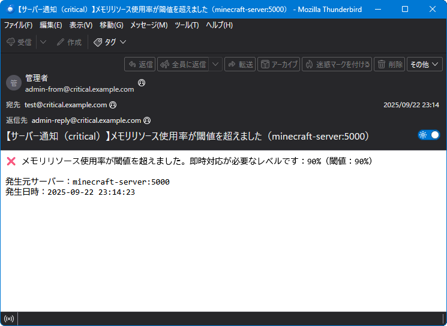
メールの件名や本文は以下のファイルで変更できます。
/**
* 通知メール関連
*/
return [
/**
* criticalレベル
*/
'MAIL_SUBJECT_CRITICAL' => '【サーバー通知（critical）】:typeリソース使用率が閾値を超えました（:server）',
'MAIL_BODY_CRITICAL' => '❌ :typeリソース使用率が閾値を超えました。即時対応が必要なレベルです：:usage%（閾値：:threshold%）'."\r\n\r\n".'発生元サーバー：:server'."\r\n".'発生日時：:timestamp',
/**
* alertレベル
*/
'MAIL_SUBJECT_ALERT' => '【サーバー通知（alert）】:typeリソース使用率が閾値を超えました（:server）',
'MAIL_BODY_ALERT' => '🚨 :typeリソース使用率が閾値を超えました。高負荷状態です：:usage%（閾値：:threshold%）'."\r\n\r\n".'発生元サーバー：:server'."\r\n".'発生日時：:timestamp',
/**
* warnレベル
*/
'MAIL_SUBJECT_WARN' => '【サーバー通知（warn）】:typeリソース使用率が閾値を超えました（:server）',
'MAIL_BODY_WARN' => '⚠️ :typeリソース使用率が閾値を超えたため注意が必要です：:usage%（閾値：:threshold%）'."\r\n\r\n".'発生元サーバー：:server'."\r\n".'発生日時：:timestamp'
];
| プレースホルダ | 内容 |
|---|---|
| :type | CPU or メモリ or ディスク |
| :server | サーバー名（<ホスト名>:<ポート番号>） |
| :usage | 使用率（%） |
| :threshold | 閾値（%） |
| :timestamp | 発生日時 |
物理メモリの使用率表示
物理メモリの使用率は棒グラフで表示され、使用率に応じて「通常」「warn」「alert」「critical」の状態色が反映されます。
また、状態色が以下のように変化し、状態の深刻度を視覚的に伝えます。
また、状態色が以下のように変化し、状態の深刻度を視覚的に伝えます。
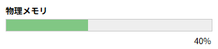
⇒
通常（安定稼働中）
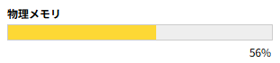
⇒
warn（注意レベル）
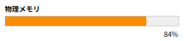
⇒
alert（警戒レベル）
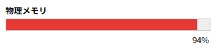
⇒
critical（即対応推奨レベル）仮想メモリの使用率表示
仮想メモリ領域を監視対象として扱い、スワップ領域を含めた棒グラフで使用率を表示します。
また、以下のように状態に応じて色分けされ、過剰な仮想メモリ使用を検知できます。
また、以下のように状態に応じて色分けされ、過剰な仮想メモリ使用を検知できます。
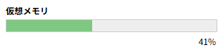
⇒
通常（安定稼働中）
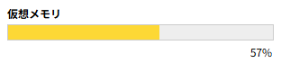
⇒
warn（注意レベル）
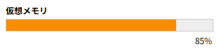
⇒
alert（警戒レベル）
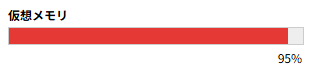
⇒
critical（即対応推奨レベル）キャッシュメモリの使用率表示
キャッシュ領域を監視対象として扱い、棒グラフで使用率を表示します。
また、以下のように状態に応じて色分けされ、過剰なキャッシュ使用を検知できます。
また、以下のように状態に応じて色分けされ、過剰なキャッシュ使用を検知できます。
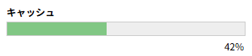
⇒
通常（安定稼働中）
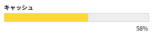
⇒
warn（注意レベル）
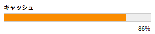
⇒
alert（警戒レベル）
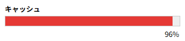
⇒
critical（即対応推奨レベル）閾値と通知の設定
GUIランチャーでは、メモリリソース監視に関する閾値と通知設定を、外部の設定ファイルによって柔軟に制御できます。
この設計により、運用者は環境やポリシーに応じて、負荷の検知タイミングや通知の発火条件を明示的に定義できます。
※ emailキーにnullを設定した項目は通知されません
また
※ 全キーにnullを設定すると通知されません。
この設計により、運用者は環境やポリシーに応じて、負荷の検知タイミングや通知の発火条件を明示的に定義できます。
return [
・
・
・
//--------------------------------------------------------------------------
// GUIモード用
//--------------------------------------------------------------------------
// 各種リソース設定
'resources' => [
・
・
・
// メモリリソース
'memory' => [
// 警告レベルの設定
'warn' => [ 'threshold' => 50, 'email' => null ],
// アラートレベルの設定
'alert' => [ 'threshold' => 75, 'email' => null ],
// クリティカルレベルの設定
'critical' => [ 'threshold' => 90, 'email' => null ]
],
・
・
・
]
];
| 状態 | 閾値設定のキー | 通知メール設定のキー |
|---|---|---|
| warn | resources.memory.warn.threshold | resources.memory.warn.email |
| alert | resources.memory.alert.threshold | resources.memory.alert.email |
| critical | resources.memory.critical.threshold | resources.memory.critical.email |
また
email キー内で以下のヘッダ情報を指定できます。| キー | 内容 |
|---|---|
| to | 宛先メールアドレス |
| from_address | fromヘッダのアドレス（fromヘッダを指定する時は必須） |
| from_name | fromヘッダの名前 |
| reply_to | replyヘッダのアドレス |
おわりに
このランチャーはクロスプラットフォーム対応なので、Windows上のWSLなどの仮想環境内でもご利用いただけますが、その場合は他の監視ツールと同様に、仮想環境内のリソースのみが監視対象となりますのでご注意ください。
Windows全体のリソースを監視する場合は、PowerShellなどを使用し、Windowsホスト上でのご利用をおすすめします。
Windows全体のリソースを監視する場合は、PowerShellなどを使用し、Windowsホスト上でのご利用をおすすめします。